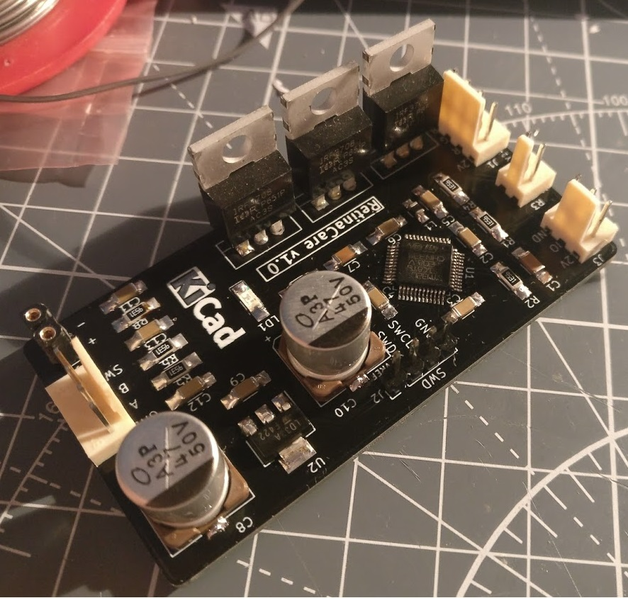
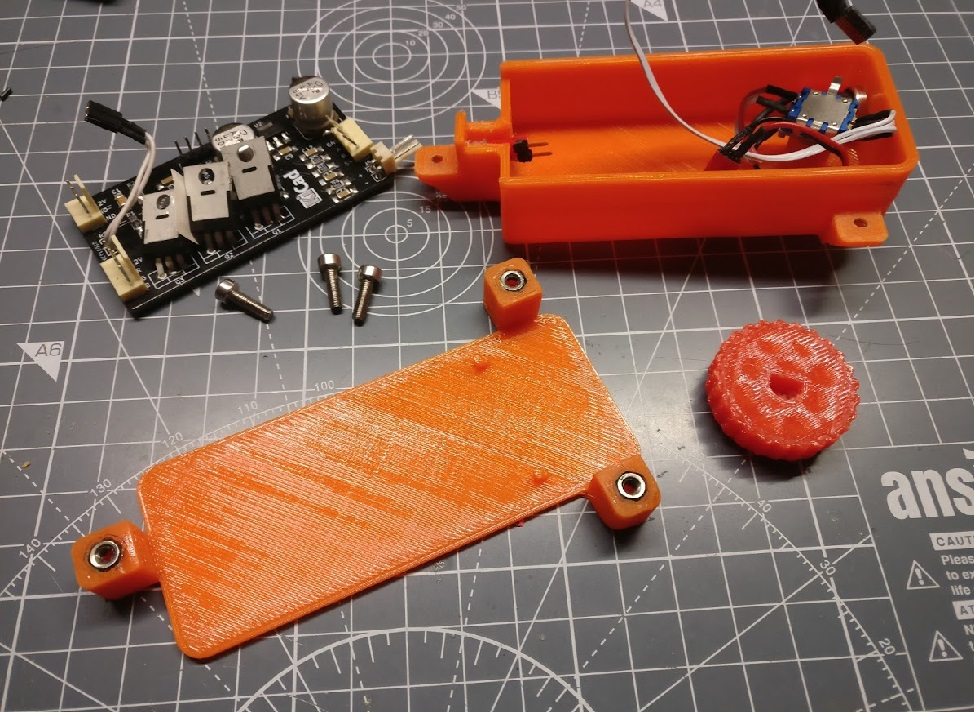
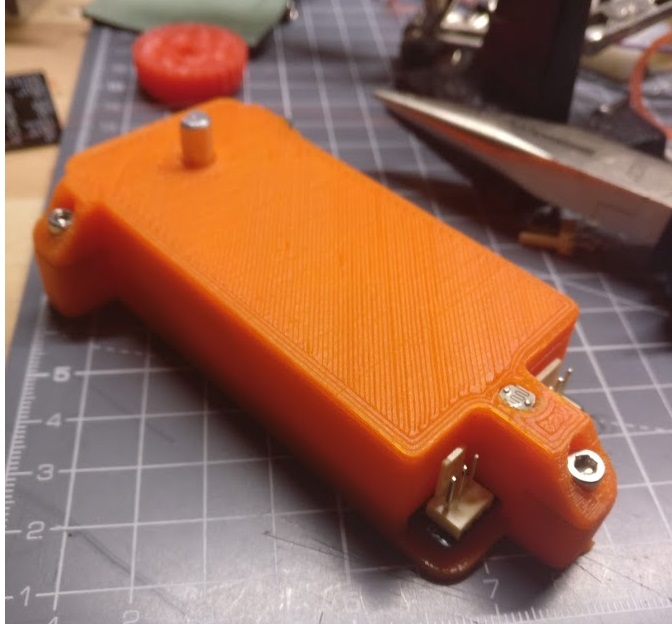
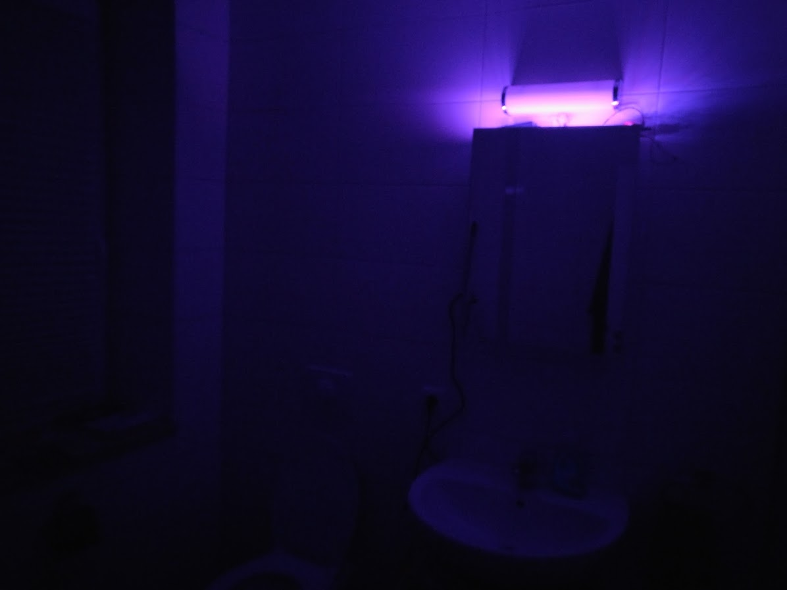

Preface
One major inconvenience of becoming an old man is having to get up in the middle of the night in order to go to the bathroom. And everytime you do so, you singe your retinas when turning on the bright bathroom light. So I fixed that.
My requirements were simple: build a lamp that
- turns on automatically when I enter the room
- consumes as little energy as possible
- does not turn on, when it's daytime
- has user-selectable color and brightness
Hardware
For detecting human presence, a standard PIR motion sensor HC-SR501 was used. Since the light sensor only has to tell apart bright and dark, a simple photo restor was enough. The light source was a strip of RGB LEDs I had laying around. Selecting the color and brightness is done via a rotary encoder. All these components are controlled by a STM32L1 microcontroller on a custom PCB, everything contained by a 3d-printed enclosure. Below are a few pictures of the PCB and the 3d-printed housing.
 
As you can see, I misjudged the height of the MOSFETs so I had to bend them a little bit... well, I'm dumb I guess.

The Firmware, PCB design and CAD model files are available in the projects GitHub repository
Software
Most of the time the device spends in low-power mode. When the motion sensor detects movement, an interrupt wakes the device up. If the light sensor reading is below a certain threshold, the leds start to fade in slowly (3 seconds). The light then stays on for 2 minutes before slowly fading out over a course of 8 seconds. If motion is detected during fadeout, the light-on-time is extended for another 30 seconds.
By pressing the button, the color/brightness selection mode is activated. After the first press, the color can be selected by turning the knob. Pressing again accepts the color (lights flash shortly) and brightness selection mode is active. A further press confirms the brightness (lights flash twice) and the settings are saved in the internal EEPROM. After 5 seconds of no input the selected color/brightness is discarded and the device returns to sleep mode. During color selection, the device also saves the light sensor reading. This works as a threshold for ambient light detection. For example, when the device registers movement before you flicked the light switch it begins turning on the LEDs. When then the normal bathromm light is turned on, the device switches off the LEDs and goes back to sleep.
The Result
Here is what it looks like, of course the crappy picture taken with my smartphone can't capture the low-light situation appropriately... But I'm very happy about it and it works really well!
The next step would be to clean up some of the cable mess and find a nice compact power adapter, but I know I will start another project instead and leave it as it is...
 Go Vikings!